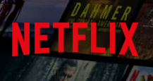

Quem sou eu?
Introdução
Estudante de análise e desenvolvimento de sistemas pela Faculdade CDL Programador front-end junior e um apaixonado por desenvolvimento.
Projetos clones realizados
Conclusão
Esse portfólio foi feito com base no projeto 6, onde foi mostrado melhores formas de formatação, melhores usos nas cores e principalmente, alinhamento e tratamento, trazendo uma maior harmonia para o projeto.